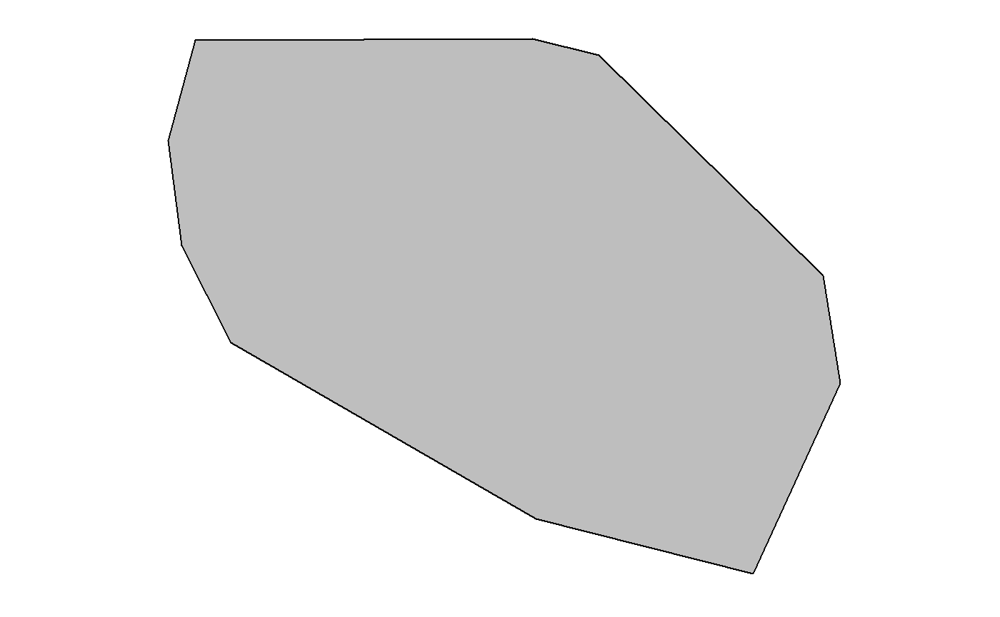
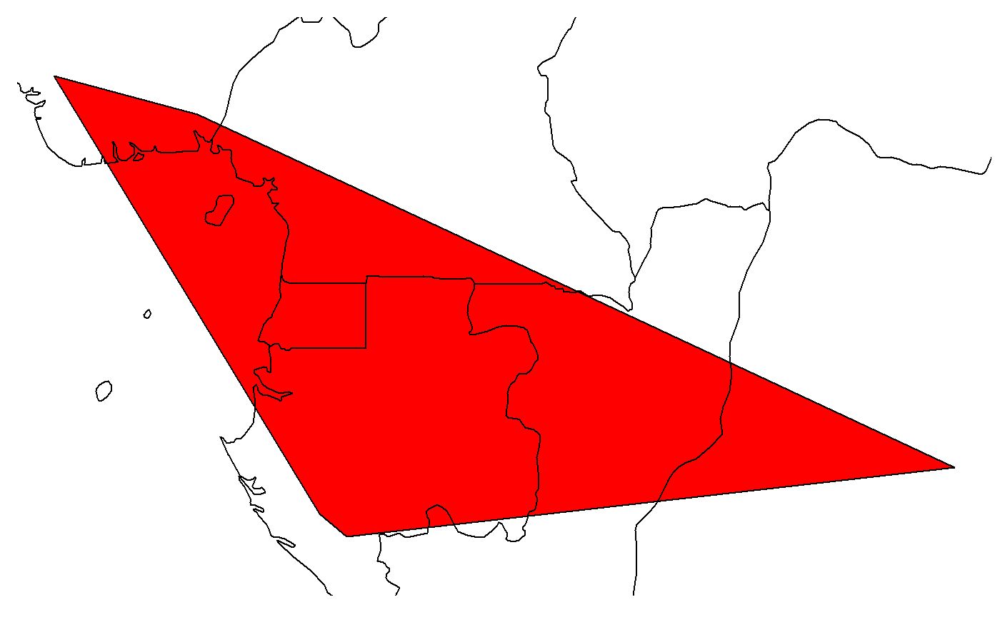
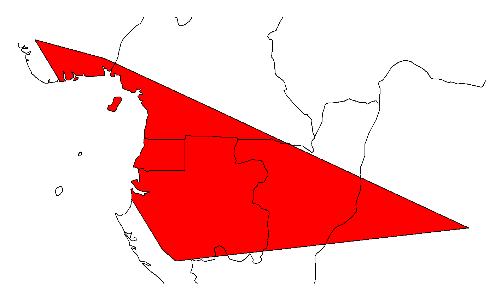
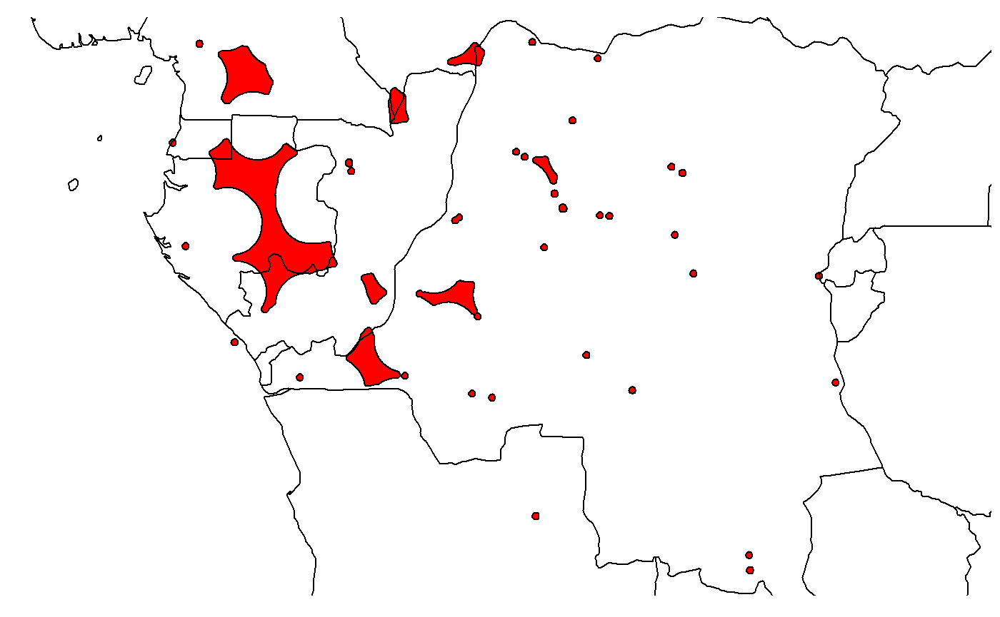
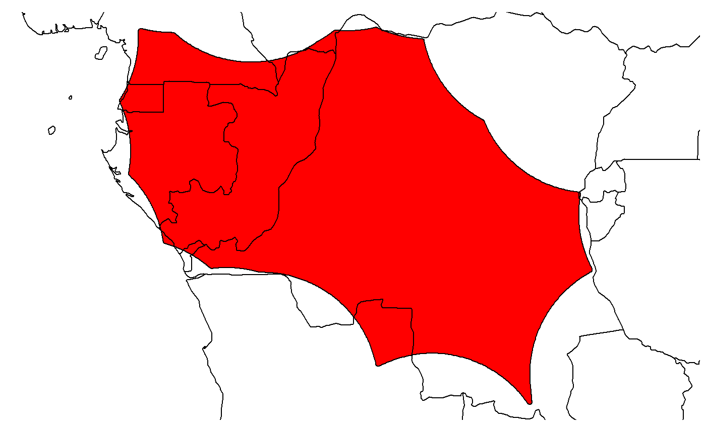
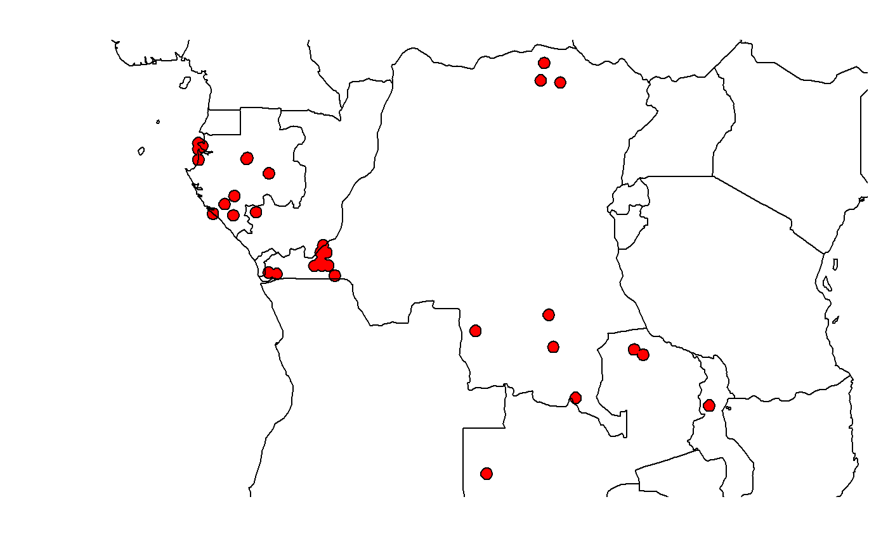

Computing EOO using EOO.computing function
The Extent of Occurrence (EOO) is
the area contained within the shortest continuous imaginary boundary which can be drawn to encompass all the known, inferred or projected sites of present occurrence of a taxon, excluding cases of vagrancy 1 (IUCN 2012)
Input file
You can prepare an excel file with three different columns:
| ddlat | ddlon | tax |
|---|---|---|
| 0.750000 | 29.75000 | Psychotria minuta |
| 3.566670 | 16.11670 | Psychotria minuta |
| 1.183330 | 9.86666 | Psychotria minuta |
| 3.238050 | 10.58060 | Psychotria minuta |
| 4.085580 | 9.04972 | Psychotria minuta |
| 0.766667 | 24.45000 | Psychotria minuta |
- ddlat: Latitude in decimal degrees
- ddlon: Longitude in decimal degrees
- Name of taxa
Note 1: field names do not matter but field order like above is mandatory
Note 2: missing coordinates will be automatically skipped
Note 3: example files are included in the package, you can have access to these files by using the following codes.
For a six plant species example dataset:
data(dataset.ex)
head(dataset.ex)
?dataset.ex ## if you want to have information on this datasetThe following dataset include occurrences of Malagasy amphibian:
data(Malagasy.amphibian)
head(Malagasy.amphibian)
?Malagasy.amphibian ## if you want to have information on this datasetYou can import your input file by using the following code. This will register your input file as an object you may name MyData, as below:
MyData <- read.csv("MyInput.csv")Depending on the parameters defined in your computer, the separator in csv file may be comma or semi-colon. If you note the importing process does not order correctly the fields of your input file, try to modify the separator used by the argument sep, see below an example defining a comma as a separator:
MyData <- read.csv("MyInput.csv", sep=",")You can have a glimpse of the first rows of your input file by running the following code:
head(MyData) #> ddlat ddlon tax #> 1 0.750000 29.75000 Psychotria minuta #> 2 3.566670 16.11670 Psychotria minuta #> 3 1.183330 9.86666 Psychotria minuta #> 4 3.238050 10.58060 Psychotria minuta #> 5 4.085580 9.04972 Psychotria minuta #> 6 0.766667 24.45000 Psychotria minuta
Now you can run EOO.computing function on your input data by the following code:
EOO.computing(MyData)The following information will appear in the console
#>
|
| | 0%
|
|================== | 25%
|
|=================================== | 50%
|
|==================================================== | 75%
|
|======================================================================| 100%
#> EOO
#> Berlinia bruneelii 2635042
#> Oncocalamus mannii 657704
#> Platycoryne guingangae 3422563
#> Psychotria minuta 760348You can see that in this example, the input file contained occurrences for four species.
By default, a csv file is created in your working directory Your_R_directory. This csv file is named by default EOO.results.csv.
You can modify the name of the exported file using the following code line (for this example by the name MyResults) :
EOO.computing(MyData, file.name = "MyResults")Exporting shapefiles used to estimate EOO
It is possible to export in R the spatial polygon object used for estimating the EOO. This is done by using the argument export_shp which is a logical argument. A logical argument can take only two values: TRUE and FALSE. By default, this argument is specified as FALSE. Hence, if you want to get these spatial polygons, you have specify it using the following code:
EOO.computing(MyData, export_shp = T) #> | | | 0% | |================== | 25% | |=================================== | 50% | |==================================================== | 75% | |======================================================================| 100% #> $EOO_1 #> [1] 2635042 #> #> $spatial.polygon_1 #> class : SpatialPolygons #> features : 1 #> extent : 9.56667, 29.35, -11.2667, 4.48333 (xmin, xmax, ymin, ymax) #> Warning in proj4string(x): CRS object has comment, which is lost in output #> crs : +proj=longlat +datum=WGS84 +no_defs #> #> $EOO_2 #> [1] 657704 #> #> $spatial.polygon_2 #> class : SpatialPolygons #> features : 1 #> extent : 5.7, 21.95, -2.39667, 5.91667 (xmin, xmax, ymin, ymax) #> Warning in proj4string(x): CRS object has comment, which is lost in output #> crs : +proj=longlat +datum=WGS84 +no_defs #> #> $EOO_3 #> [1] 3422563 #> #> $spatial.polygon_3 #> class : SpatialPolygons #> features : 1 #> extent : 9.325, 33.7333, -15.1667, 4.43333 (xmin, xmax, ymin, ymax) #> Warning in proj4string(x): CRS object has comment, which is lost in output #> crs : +proj=longlat +datum=WGS84 +no_defs #> #> $EOO_4 #> [1] 760348 #> #> $spatial.polygon_4 #> class : SpatialPolygons #> features : 1 #> extent : 9.04972, 29.75, -1.88333, 4.08558 (xmin, xmax, ymin, ymax) #> Warning in proj4string(x): CRS object has comment, which is lost in output #> crs : +proj=longlat +datum=WGS84 +no_defs
You can see that the output of the function now includes, in addition to the EOO values, objects of class SpatialPolygons.
It is possible to extract and map these objects by using the code below.
First, store your results into the object here named EOO.results:
EOO.results <- EOO.computing(MyData, export_shp = T)Then, for the first species (mapped in grey color):
plot(EOO.results$spatial.polygon_1, col="grey")

You can add easily get a map of countries using the package rnaturalearth:
land <- rnaturalearth::ne_countries(scale = 50, returnclass = "sp")
Now you can add the land cover as a background by running the following code:

For mapping the convex hull of the second species (mapped in red)

You may want to use your own land cover background shapefile. This is easily done by using the function readOGR.
For using this function, you first has to install (if not yet installed) and load the package rgdal.
install.packages("rgdal") library(rgdal)
For example, for importing a shapefile named MyShapefile, just run the code (after transferring your file into Your_R_directory) : readOGR("MyShapefile.shp")
Writing shapefiles used to estimate EOO
The above manipulation allows you to extract in R the spatial polygons. It is also possible to create and export these spatial polygons as shapefiles into your working directory, which can later be imported in a GIS software. This is done by using the logical argument write_shp which is FALSE by default. If you define it as TRUE as below, a directory named shapesIUCN is created in your working directory and will contain all the shapefiles created for computing EOO.
EOO.computing(MyData, write_shp = T)Cropping spatial polygon for excluding unsuitable area
You may want to exclude areas that are not suitable for your species when computing EOO. This is feasible using the logical argument exclude.area which is FALSE by default. When define as TRUE, cropped areas will be defined by the shapefile you provide with the argument country_map. Note that it is mandatory to provide a shapefile for country_map if exclude.area is TRUE. In the example, below, we provide the land world cover. Ocean cover is therefore excluded when computing EOO.
EOO.computing(MyData, exclude.area = T, country_map = land) #> | | | 0% | |================== | 25% | |=================================== | 50% | |==================================================== | 75% | |======================================================================| 100% #> EOO #> Berlinia bruneelii 2628788.7 #> Oncocalamus mannii 565151.8 #> Platycoryne guingangae 3413217.0 #> Psychotria minuta 747744.0
Results of the EOO are higher for species that have an overlapping hull convex with the ocean cover:
EOO.computing(MyData, exclude.area = F, country_map = land) #> | | | 0% | |================== | 25% | |=================================== | 50% | |==================================================== | 75% | |======================================================================| 100% #> EOO #> Berlinia bruneelii 2635042 #> Oncocalamus mannii 657704 #> Platycoryne guingangae 3422563 #> Psychotria minuta 760348
The result can be visually verified by mapping the spatial polygon:
EOO.results <- EOO.computing(MyData, exclude.area = T, country_map = land, export_shp = T) #> | | | 0% | |================== | 25% | |=================================== | 50% | |==================================================== | 75% | |======================================================================| 100% plot(EOO.results$spatial.polygon_2, col="red") plot(land, add=T)

Using an alpha hull to compute EOO
By default, EOO is based on a convex hull. You may want to use instead an alpha hull (see 2 for guidelines on when it is relevant). This is feasible by using the argument method.range as follows:
EOO.computing(MyData, method.range = "alpha.hull") #> | | | 0% | |================== | 25% | |=================================== | 50% | |==================================================== | 75% | |======================================================================| 100% #> EOO #> Berlinia bruneelii 154154 #> Oncocalamus mannii 28668 #> Platycoryne guingangae 32694 #> Psychotria minuta 4062
To visually map the result:
EOO.results <- EOO.computing(MyData, method.range = "alpha.hull", export_shp = T) #> | | | 0% | |================== | 25% | |=================================== | 50% | |==================================================== | 75% | |======================================================================| 100% plot(EOO.results$spatial.polygon_1, col="red") plot(land, add=T)

The alpha parameter of the alpha-hull can be modified by the alpha argument. Below an example with the second species:
EOO.results <- EOO.computing(MyData, method.range = "alpha.hull", export_shp = T, alpha=5) #> | | | 0% | |================== | 25% | |=================================== | 50% | |==================================================== | 75% | |======================================================================| 100% plot(EOO.results$spatial.polygon_1, col="red") plot(land, add=T)

Alpha hull can be equally cropped for unsuitable area:
EOO.results <- EOO.computing(MyData, method.range = "alpha.hull", export_shp = T, alpha=5, exclude.area = T, country_map = land) #> | | | 0% | |================== | 25% | |=================================== | 50% | |==================================================== | 75% | |======================================================================| 100% plot(EOO.results$spatial.polygon_1, col="red") plot(land, add=T)

Messages
The EOO is null when occurrences form a straight segment. This is a very infrequent case and obviously represents an underestimate of the EOO 2 (IUCN 2016). In that specific case, there is a message and the EOO will be estimated using a different method: a polygon is built by adding a buffer of a defined size to the segment.
The buffer is by default equal to 0.1 and is defined by the argument buff.alpha.
As an illustration, see this example below with an hypothetical species of three occurrences
EOO.results <- EOO.computing(MyData, export_shp = T) #> | | | 0% | |======================================================================| 100% #> #> Occurrences of species_2 follow a straight line, thus EOO is based on an artificial polygon using buff_width plot(EOO.results$spatial.polygon_1, col="red") points(MyData[,2], MyData[,1], pch=19) ### map the occurrences.

The EOO cannot be computed when there is less than three unique occurrences 1. When this is the case, a message appears.
See this example below with an artificial species having less than three occurrences
EOO.results <- EOO.computing(MyData, export_shp = T) #> | | | 0% | |======================================================================| 100% #> #> EOO parameter cannot be estimated for species_1 because there is less than 3 unique occurrences EOO.results #> species1 #> NA
Subpopulations computation using subpop.comp function
Using subpop.comp function
This function applies the method called circular buffer method for estimating the number of subpopulation (Rivers et al., 2010).
The argument Resol_sub_pop must be given and defines in kilometres the radius of the circles around each occurrence.
SUB <- subpop.comp(MyData, Resol_sub_pop = 30) SUB #> $`Berlinia bruneelii` #> $`Berlinia bruneelii`$`Number of subpopulation` #> [1] 48 #> #> $`Berlinia bruneelii`$subpop.poly #> class : SpatialPolygonsDataFrame #> features : 48 #> extent : 9.297175, 29.61949, -11.54333, 4.755502 (xmin, xmax, ymin, ymax) #> Warning in proj4string(x): CRS object has comment, which is lost in output #> crs : +proj=longlat +datum=WGS84 +no_defs #> variables : 0 #> #> #> $`Oncocalamus mannii` #> $`Oncocalamus mannii`$`Number of subpopulation` #> [1] 13 #> #> $`Oncocalamus mannii`$subpop.poly #> class : SpatialPolygonsDataFrame #> features : 13 #> extent : 5.430505, 22.21949, -2.668239, 6.189462 (xmin, xmax, ymin, ymax) #> Warning in proj4string(x): CRS object has comment, which is lost in output #> crs : +proj=longlat +datum=WGS84 +no_defs #> variables : 0 #> #> #> $`Platycoryne guingangae` #> $`Platycoryne guingangae`$`Number of subpopulation` #> [1] 21 #> #> $`Platycoryne guingangae`$subpop.poly #> class : SpatialPolygonsDataFrame #> features : 21 #> extent : 9.055505, 34.00279, -15.44773, 4.705483 (xmin, xmax, ymin, ymax) #> Warning in proj4string(x): CRS object has comment, which is lost in output #> crs : +proj=longlat +datum=WGS84 +no_defs #> variables : 0 #> #> #> $`Psychotria minuta` #> $`Psychotria minuta`$`Number of subpopulation` #> [1] 10 #> #> $`Psychotria minuta`$subpop.poly #> class : SpatialPolygonsDataFrame #> features : 10 #> extent : 8.780225, 30.01949, -2.154805, 4.357609 (xmin, xmax, ymin, ymax) #> Warning in proj4string(x): CRS object has comment, which is lost in output #> crs : +proj=longlat +datum=WGS84 +no_defs #> variables : 0 #> #> #> $species_1 #> $species_1$`Number of subpopulation` #> [1] 2 #> #> $species_1$subpop.poly #> class : SpatialPolygonsDataFrame #> features : 2 #> extent : 11.19721, 13.21949, -2.221486, 1.6214 (xmin, xmax, ymin, ymax) #> Warning in proj4string(x): CRS object has comment, which is lost in output #> crs : +proj=longlat +datum=WGS84 +no_defs #> variables : 0 #> #> #> $species_2 #> $species_2$`Number of subpopulation` #> [1] 2 #> #> $species_2$subpop.poly #> class : SpatialPolygonsDataFrame #> features : 2 #> extent : 11.19721, 13.45279, -2.221486, -1.678556 (xmin, xmax, ymin, ymax) #> Warning in proj4string(x): CRS object has comment, which is lost in output #> crs : +proj=longlat +datum=WGS84 +no_defs #> variables : 0 plot(SUB[["Platycoryne guingangae"]][["subpop.poly"]], col="red") plot(land, add=TRUE)

Preliminary IUCN assessment for multiple species using IUCN.eval function
Input data
You can prepare an excel file with three mandatory different columns and two optional ones:
| ddlat | ddlon | tax |
|---|---|---|
| 0.750000 | 29.75000 | Psychotria minuta |
| 3.566670 | 16.11670 | Psychotria minuta |
| 1.183330 | 9.86666 | Psychotria minuta |
| 3.238050 | 10.58060 | Psychotria minuta |
| 4.085580 | 9.04972 | Psychotria minuta |
| 0.766667 | 24.45000 | Psychotria minuta |
- ddlat: Latitude in decimal degrees
- ddlon: Longitude in decimal degrees
- Name of taxa
Note 1: for these three fields, names do not matter but field position (latitude, longitude and taxa names in that order) are mandatory
Note 2: missing coordinates will be automatically skipped
- (optional) higher.tax.rank : name of higher taxonomic rank that will be display in output maps (see below).
- (optional) coly : year of sample collection. If provided, a graph will be added in output maps (see below).
- Note 3: for these former two optional fields, names matter and should be higher.tax.rank and coly
| ddlat | ddlon | tax | higher.tax.rank | coly |
|---|---|---|---|---|
| -4.46667 | 11.4167 | Berlinia bruneelii | Fabaceae | 1827 |
| -5.66667 | 29.3500 | Berlinia bruneelii | Fabaceae | 1989 |
| 3.88333 | 18.6833 | Berlinia bruneelii | Fabaceae | 1980 |
| 4.48333 | 20.3000 | Berlinia bruneelii | Fabaceae | 1805 |
| -2.76667 | 18.4833 | Berlinia bruneelii | Fabaceae | 1788 |
| -1.26667 | 24.5500 | Berlinia bruneelii | Fabaceae | 1993 |
You can import your input file by using the following code. This will register your input file as an object you may name MyData, as below:
MyData <- read.csv("MyInput.csv")You can have a glimpse of the first rows of your input file by running the following code:
head(MyData) #> ddlat ddlon tax #> 1 0.750000 29.75000 Psychotria minuta #> 2 3.566670 16.11670 Psychotria minuta #> 3 1.183330 9.86666 Psychotria minuta #> 4 3.238050 10.58060 Psychotria minuta #> 5 4.085580 9.04972 Psychotria minuta #> 6 0.766667 24.45000 Psychotria minuta
head(MyData2) #> ddlat ddlon tax higher.tax.rank coly #> 1 -4.46667 11.4167 Berlinia bruneelii Fabaceae 1994 #> 2 -5.66667 29.3500 Berlinia bruneelii Fabaceae 1877 #> 3 3.88333 18.6833 Berlinia bruneelii Fabaceae 1925 #> 4 4.48333 20.3000 Berlinia bruneelii Fabaceae 1843 #> 5 -2.76667 18.4833 Berlinia bruneelii Fabaceae 1945 #> 6 -1.26667 24.5500 Berlinia bruneelii Fabaceae 1930
Running IUCN.eval function by default
To see what are the default values, see ?IUCN.eval
You can simply run the following code:
IUCN.eval(MyData) #> | | | 0% | |============ | 17% | |======================= | 33% | |=================================== | 50% | |=============================================== | 67% | |========================================================== | 83% #> #> EOO parameter cannot be estimated for species_1 because there is less than 3 records #> | |======================================================================| 100% #> #> Occurrences of species_2 follow a straight line, thus EOO is based on an artificial polygon using buff_width #> #> [1] "Number of species per category" #> #> EN LC or NT VU #> 2 3 1 #> [1] "Ratio of species per category" #> #> EN LC or NT VU #> 33.3 50.0 16.7 #> taxa EOO AOO Nbe_unique_occ. #> Berlinia bruneelii Berlinia bruneelii 2635042.0 404 105 #> Oncocalamus mannii Oncocalamus mannii 657704.0 176 47 #> Platycoryne guingangae Platycoryne guingangae 3422563.0 148 37 #> Psychotria minuta Psychotria minuta 760348.0 40 11 #> species_1 species_1 NA 8 2 #> species_2 species_2 4603.7 12 3 #> Nbe_subPop Nbe_loc Category_CriteriaB Category_code #> Berlinia bruneelii 88 94 LC or NT LC or NT B1a+B2a #> Oncocalamus mannii 29 35 LC or NT LC or NT B1a+B2a #> Platycoryne guingangae 34 35 LC or NT LC or NT B1a+B2a #> Psychotria minuta 10 10 VU VU B2a #> species_1 2 2 EN EN B2a #> species_2 3 3 EN EN B1a+B2a #> Category_AOO Category_EOO #> Berlinia bruneelii LC or NT LC or NT #> Oncocalamus mannii LC or NT LC or NT #> Platycoryne guingangae LC or NT LC or NT #> Psychotria minuta VU LC or NT #> species_1 EN <NA> #> species_2 EN EN
Because the EOO computation (using EOO.computing, see 1.3) is included within IUCN.eval function, we have the same arguments available (see 1.3) and the same warnings (see 1.3.6)
Output: IUCN categories and parameters estimation
The output of the function is a data frame that provides several parameters as well as the preliminary IUCN category.
#> taxa EOO AOO Nbe_unique_occ.
#> Berlinia bruneelii Berlinia bruneelii 2635042.0 404 105
#> Oncocalamus mannii Oncocalamus mannii 657704.0 176 47
#> Platycoryne guingangae Platycoryne guingangae 3422563.0 148 37
#> Psychotria minuta Psychotria minuta 760348.0 40 11
#> species_1 species_1 NA 8 2
#> species_2 species_2 4603.7 12 3
#> Nbe_subPop Nbe_loc Category_CriteriaB Category_code
#> Berlinia bruneelii 88 94 LC or NT LC or NT B1a+B2a
#> Oncocalamus mannii 29 35 LC or NT LC or NT B1a+B2a
#> Platycoryne guingangae 34 35 LC or NT LC or NT B1a+B2a
#> Psychotria minuta 10 10 VU VU B2a
#> species_1 2 2 EN EN B2a
#> species_2 3 3 EN EN B1a+B2a
#> Category_AOO Category_EOO
#> Berlinia bruneelii LC or NT LC or NT
#> Oncocalamus mannii LC or NT LC or NT
#> Platycoryne guingangae LC or NT LC or NT
#> Psychotria minuta VU LC or NT
#> species_1 EN <NA>
#> species_2 EN ENNote that by default, an excel file has been created in your working directory Your_R_directory. If you prefer to have your output exported as csv file, you can do it by changing the argument write_file_option:
IUCN.eval(DATA = MyData, write_file_option = "csv")| taxa | EOO | AOO | Nbe_unique_occ. | Nbe_subPop | Nbe_loc | Category_CriteriaB | Category_code | Category_AOO | Category_EOO | |
|---|---|---|---|---|---|---|---|---|---|---|
| Berlinia bruneelii | Berlinia bruneelii | 2635042.0 | 404 | 105 | 88 | 94 | LC or NT | LC or NT B1a+B2a | LC or NT | LC or NT |
| Oncocalamus mannii | Oncocalamus mannii | 657704.0 | 176 | 47 | 29 | 35 | LC or NT | LC or NT B1a+B2a | LC or NT | LC or NT |
| Platycoryne guingangae | Platycoryne guingangae | 3422563.0 | 148 | 37 | 34 | 35 | LC or NT | LC or NT B1a+B2a | LC or NT | LC or NT |
| Psychotria minuta | Psychotria minuta | 760348.0 | 40 | 11 | 10 | 10 | VU | VU B2a | VU | LC or NT |
| species_1 | species_1 | NA | 8 | 2 | 2 | 2 | EN | EN B2a | EN | NA |
| species_2 | species_2 | 4603.7 | 12 | 3 | 3 | 3 | EN | EN B1a+B2a | EN | EN |
This excel file is named by default IUCN_results.xlsx But you can change the file name using the following code:
MyResults <- IUCN.eval(MyData, file_name="MyIUCNresults")The different fields of the output data frame are:
EOO field: provides EOO in square kilometres.
if EOO is lower than AOO, EOO is put equal to AOO, as suggested by IUCN guidelines 2 (IUCN 2016).
NA is given when EOO cannot be computed because the taxon has less than three unique occurrences.
AOO field: provides AOO in square kilometres.
Nbe_unique_occ. field: the number of unique coordinates.
Nbe_subPop field: the number of subpopulations following the circular buffer method (Rivers et al. 2010) (see 1.4).
- this parameter is not taken into account for the evaluation following Criterion B.
Nbe_loc field: the number of locations (see 5.7)
Category_CriteriaB field: IUCN category following conditions of Criterion B (see table below).
LC: Least Concern
-
NT: Near Threatened
- NT category is assigned here for taxa with a number of location lower than 14 and higher than 10, with EOO higher or equal to 20,000 km2 and with AOO higher or equal to 2,000 km2.
VU: Vulnerable
EN: Endangered
CR: Critically Endangered
IUCN categories and criteria
Subcriteria and conditions for determining the conservation status following IUCN criterion B (IUCN 2012). Only sub-criteria B1 and B2 and condition (a) (number of locations) are taken into account, while condition (b)(iii) is assumed to be true
Category_code field: code indicating which sub-criteria or conditions (see table above) are met 2 (IUCN 2016).
- for example EN B2a mean the category EN is preliminary assigned to this taxa because sub-criterion B2 (AOO) is lower than 500 km² and higher than 10 km² and condition (a) (number of locations) is lower than 6 and higher than 1.
Category_AOO field: IUCN category following conditions of Criterion B (see table above) but without taking into account sub-criterion B1 (EOO).
Category_EOO field: IUCN category following conditions of Criterion B (see table above) but without taking into account sub-criterion B2 (AOO).
Output maps
By default, IUCN.eval creates for each taxa a map in png format. These maps are stored in a directory, named IUCN_results_map that has been created in your working directory Your_R_directory.

Example of a map output exported in IUCN_results_map directory
If the optional fields higher.tax.rank and coly are provided, output maps display a bar graph showing the number of collection per year on the bottom right of the map and the name of the higher taxonomic rank below the taxon name.

Example of a map output exported in IUCN_results_map directory
Another example of an output map for a narrow range malagasy amphibian species.
Circles around occurrence points represent subpopulations, as defined in 4.
Pink squares represent occupied cells of the grid used for estimating the number of locations, see 5.7
Finally, the polygon in grey is the hull convex used to estimate the EOO, see 3.

Example of a map output exported in IUCN_results_map directory
Options concerning the computation of area of occupancy (AOO)
The area of occupancy (AOO) is computed by calculating the area covered by the number of occupied cells of a grid for a given resolution. By default, the size of grid cells is 2 km, as recommended by IUCN guidelines 2 (IUCN 2016).
It is nevertheless possible to modify the resolution using the argument Cell_size_AOO, as follows:
Cell size of 20 km:
MyResults <- IUCN.eval(MyData, Cell_size_AOO = 20) #> | | | 0% | |======================================================================| 100% MyResults #> taxa EOO AOO Nbe_unique_occ. Nbe_subPop #> Psychotria minuta Psychotria minuta 760348 4000 11 10 #> Nbe_loc Category_CriteriaB Category_code Category_AOO #> Psychotria minuta 10 LC or NT LC or NT B1a+B2a LC or NT #> Category_EOO #> Psychotria minuta LC or NT
AOO is now equal to 4000 km².
Important note:
A grid may give different numbers of occupied cells (and thus different AOO values) depending on the position of the grid. The script currently tests different positions of the grid by several translations. When the number of occupied cells vary for the different positions, the minimum is chosen, as suggested by the guidelines of IUCN 2 (IUCN 2016).
Options concerning the computation of number of location
A location is defined by the IUCN as
a geographically or ecologically distinct area in which a single threatening event can rapidly affect all individuals of the taxon present. The size of the location depends on the area covered by the threatening event and may include part of one or many subpopulations. Where a taxon is affected by more than one threatening event, location should be defined by considering the most serious plausible threat 1 (IUCN 2012) 2 (IUCN 2016).
Given this definition, it is clear that the number of locations can only properly be assessed using a species by species procedure. We nevertheless propose a procedure in ConR that estimates the number of locations using the following method:
The number of locations is the number of occupied cells of a grid for a given resolution. By default, the size of grid cells is 10 km.
It is also possible to take into account different levels of threat by including a map of protected areas (see below)
Estimation of the number of locations by default
It is possible to modify the resolution using the argument Cell_size_locations.
Below is an example for amphibian species of Madagascar.
First, for the example, I select one species among the Malagasy amphibians example dataset included in the package loaded by using the data() function:
data(Malagasy.amphibian) MyData <- Malagasy.amphibian[which(Malagasy.amphibian[,"tax"] %in% c("Anodonthyla moramora")),]
Locations computed for a grid of 10 km cell size:
IUCN.eval(MyData, Cell_size_locations = 10) #> | | | 0% | |======================================================================| 100% #> taxa EOO AOO Nbe_unique_occ. Nbe_subPop #> Anodonthyla moramora Anodonthyla moramora 799 36 13 3 #> Nbe_loc Category_CriteriaB Category_code Category_AOO #> Anodonthyla moramora 4 EN EN B1a+B2a EN #> Category_EOO #> Anodonthyla moramora EN
Example of a map output exported in IUCN_results_map directory
Locations computed for a grid of 30 km cell size:
IUCN.eval(MyData, Cell_size_locations = 30) #> | | | 0% | |======================================================================| 100% #> taxa EOO AOO Nbe_unique_occ. Nbe_subPop #> Anodonthyla moramora Anodonthyla moramora 799 36 13 3 #> Nbe_loc Category_CriteriaB Category_code Category_AOO #> Anodonthyla moramora 2 EN EN B1a+B2a EN #> Category_EOO #> Anodonthyla moramora EN

Example of a map output exported in IUCN_results_map directory
Locations computed for a grid of 50 km cell size:
IUCN.eval(MyData, Cell_size_locations = 50) #> | | | 0% | |======================================================================| 100% #> taxa EOO AOO Nbe_unique_occ. Nbe_subPop #> Anodonthyla moramora Anodonthyla moramora 799 36 13 3 #> Nbe_loc Category_CriteriaB Category_code Category_AOO #> Anodonthyla moramora 2 EN EN B1a+B2a EN #> Category_EOO #> Anodonthyla moramora EN

Example of a map output exported in IUCN_results_map directory
The resolution of the grid can also be defined by a sliding scale (Rivers et al. 2010), that is, the cell size is defined by 1/x of the maximum inter-occurrences distance. In such case, the resolution of the grid is species-specific.
This method can be implemented in IUCN.eval by using the arguments method_locations and Rel_cell_size.Rel_cell_size defines the x, where the cell size = 1/x*(maximum distance between two occurrences)
Below, an example, where the resolution is 5% of the maximum distance between two occurrences. The resulting resolution is 3.1 km as indicated in resulting map legend.

Example of a map output exported in IUCN_results_map directory
Important note:
A grid may give different numbers of occupied cells depending on the position of the grid. The script currently tests different positions of the grid by several translations. When the number of occupied cells varies for the different positions, the minimum value is chosen.
Estimation of the number of locations by taking into account protected areas
In order to take into account different levels of threat, we propose a procedure to take into account protected areas. The rationale is that occurrences within and outside protected areas are under different levels of threat. We propose two different methods using the IUCN.eval function. The method can be specified by the argument method_protected_area:
-
method_protected_area = "no_more_than_one"This is the method implemented by default. In that case, all occurrences within a given protected area are considered as one location. All sub-populations within a protected area are under a similar level of threat which could for example the degazettement of the protected area.
Occurrences outside the protected area will be used for estimating the number of locations using an overlaying grid.
The example below illustrates this method:
data(Madagascar.protec)
IUCN.eval(MyData, Cell_size_locations = 10, protec.areas = Madagascar.protec)
Example of a map output exported in IUCN_results_map directory
The legend shows the results. 75% of occurrences are within protected areas. Two different protected areas are occupied, which represent two different locations. In addition, 25% of occurrences are outside protected areas. For these occurrences, the overlaid grid of 10 km leads to two occupied cells, which represents two different locations. Hence, the total number of location is estimated to be 4 for this species.
-
method_protected_area = "other"In that case, occurrences within and outside protected area are treated separately by the same procedure: overlaying of grid of a given resolution.
data(Madagascar.protec)
IUCN.eval(MyData, Cell_size_locations = 10, protec.areas = Madagascar.protec, method_protected_area = "other")Contrary to the previous results, the number of locations within protected area is not equal to the number of occupied protected areas.

Example of a map output exported in IUCN_results_map directory
Note 1: Only a map of protected areas from Madagascar is included in ConR, as an example dataset. If you want to import your own protected area shapefile, you can do it by using the function readShapePoly. Protected area shapefile can be freely downloaded from the World Database on Protected Areas (WDPA, http://www.protectedplanet.net/). For example, for importing a shapefile names MyShapefile, just run the code (after transferring your file into Your_R_directory) : readShapePoly("MyShapefile" , proj4string=CRS("+proj=longlat +datum=WGS84")).
Note 2: The protected areas shapefile should be given as SpatialPolygonsDataFrame in the argument protec.areas as above. The argument ID_shape_PA should also be given and should represent the unique ID of each protected area in the provided shapefile. This can be checked by the following code:
colnames(Madagascar.protec@data) with the malagasy protected area shapefile.
Compute in parallel
For large datasets (typically more than 100 species or when producing maps is required), I recommend to run the computation in parallel, which is feasible by using the following code.
data(Madagascar.protec)
IUCN.eval(MyData, Cell_size_locations = 10, protec.areas = Madagascar.protec, parallel=T, NbeCores=4)The argument NbeCores indicate the number of cores on which you want to run the analysis. For more information, see the package doparallel.
Mapping results of IUCN.eval using map.res function
If you assess the preliminary conservation status of large number of species in a given region, you can map the number of records, species, threatened species and the proportion of threatened species by using the map.res function. Maps are drawn in fixed grid cells whose resolution and extent can be defined.
Below, preliminary conservation status of all malagasy amphibian species of the example dataset are assessed by using the IUCN.eval function. Results are stored in an object MyResults.
This computation should be relatively time consuming (depending on the computer power) given the number of species assessed, so be patient. For a high number of species, paralleling is a good option for fastening the computation.
data(Madagascar.protec)
data(Malagasy.amphibian)
MyResults <- IUCN.eval(Malagasy.amphibian, protec.areas = Madagascar.protec, ID_shape_PA = "WDPA_PID", showWarnings = FALSE)You can map the result by using the following code:
data(land)
map.res(MyResults, Occurrences=Malagasy.amphibian, country_map=land, export_map=TRUE, threshold=3,
LatMin=-25,LatMax=-12,LongMin=42, LongMax=52, Resol=1)The argument Occurrences should include the input file.
The argument country_map should include the background spatial polygon. In this case, we use the default land shapefile that should be loaded once before using data().
The argument export_map is logical. If TRUE, maps are exported in your working environment.
The argument Resol must be numerical. It indicates the resolution of the grid cell.
The argument threshold must be numerical. It indicates the minimum number of occurrences within each grid cell: above, it is defined as 3. Hence, only grid cells with at least three occurrences are shown.
The arguments LatMin, LatMax, LongMin and LongMax are minimum/maximum latitude/longitude of the maps. If not given, the extent of the map is the extent of all occurrences.
Maps should have been created in your working directory.
Example of a map output exported in IUCN_results_map directory

Example of a map output exported in IUCN_results_map directory
Example of a map output exported in IUCN_results_map directory

Example of a map output exported in IUCN_results_map directory
References
IUCN. 2012. IUCN Red List Categories and Criteria: Version 3.1. Second edition. Gland, Switzerland and Cambridge, UK: IUCN. http://www.iucnredlist.org/technical-documents/categories-and-criteria
IUCN Standards and Petitions Subcommittee. 2016. Guidelines for Using the IUCN Red List Categories and Criteria. Version 12. Prepared by the Standards and Petitions Subcommittee. http://www.iucnredlist.org/documents/RedListGuidelines.pdf
Rivers MC, Bachman SP, Meagher TR, Lughadha EN, Brummitt NA (2010) Subpopulations, locations and fragmentation: applying IUCN red list criteria to herbarium specimen data. Biodiversity and Conservation 19: 2071-2085. doi: 10.1007/s10531-010-9826-9
See argument
method.less.than3for an alternative by giving an arbitrary value to these species.↩︎